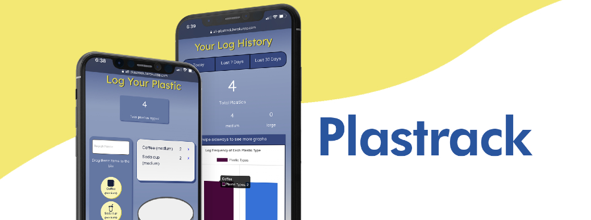
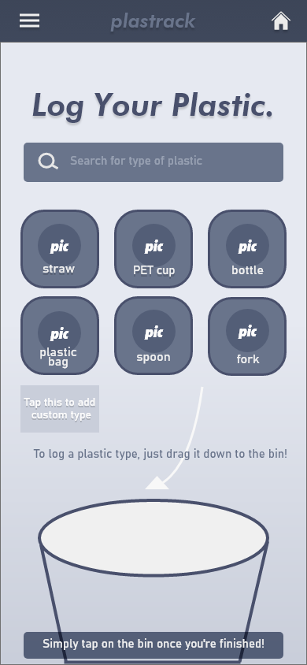
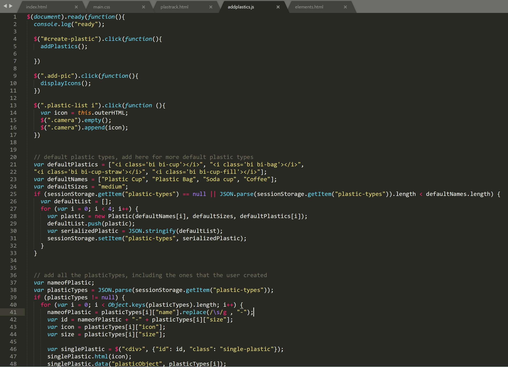
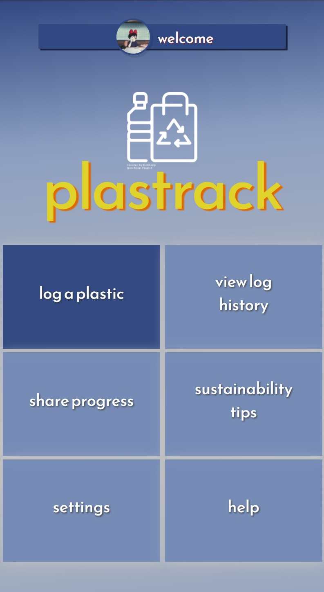

Plastrack
Plastrack: Keep tabs on your plastic waste by logging your plastic items and tracking your usage trends.
This mobile web app was a collaborative effort between Jane Dinh, Timothy Juacalla, and Anand Suresh for CSE 170/COGS 120: Interaction Design at UCSD.Needfinding and Storyboarding
 Before Plastrack could be realized, a large portion of time was dedicated to the ideation process. A refrain of the course was to address existing user needs, which our group would use as inspiration for our app's core interaction. To find existing user needs, we used the process of Needfinding, in which we'd get people to do tasks and analyze the successes and breakdowns in the process. I tracked how 3 individuals tracked their finances and found that a common throughline between these processes was the tediousness involved.
Before Plastrack could be realized, a large portion of time was dedicated to the ideation process. A refrain of the course was to address existing user needs, which our group would use as inspiration for our app's core interaction. To find existing user needs, we used the process of Needfinding, in which we'd get people to do tasks and analyze the successes and breakdowns in the process. I tracked how 3 individuals tracked their finances and found that a common throughline between these processes was the tediousness involved.
 While none of the topics from our members' needfinding process was chosen as our app idea, finding the successes and pain points from observing them interact with both analog and digital technology was incredibly insightful in how we wanted to design our app. Because of our mutual interest in environmentalism, we settled on an app idea and point of view: "People are just becoming aware of the ongoing environmental crisis, yet are not cognizant of how large their contribution to this issue is, and how to minimize it. Environmentally-conscious citizens need a way to quantify and visualize the impact of their single-use plastic usage that is quick to record in the moment."
While none of the topics from our members' needfinding process was chosen as our app idea, finding the successes and pain points from observing them interact with both analog and digital technology was incredibly insightful in how we wanted to design our app. Because of our mutual interest in environmentalism, we settled on an app idea and point of view: "People are just becoming aware of the ongoing environmental crisis, yet are not cognizant of how large their contribution to this issue is, and how to minimize it. Environmentally-conscious citizens need a way to quantify and visualize the impact of their single-use plastic usage that is quick to record in the moment."
Of course, coming up with a central idea was just the first step. Storyboarding, in which hypothetical user personas and scenarios in which their user need is addressed through our app, helped us cement whether there could be a possible userbase for our would-be product.
Pencils to Pixels: Prototyping and User Testing

The common refrain throughout the process was iterate, iterate, iterate. So while we were itching to getting down to implement our exciting idea in code, it was important to whittle down the most important interactions without wasting time or effort in the likely event that the first iterations would need to be redone. Low-fidelity prototyping would give us the highest payoff to effort ratio in creating an effective blueprint before crystallizing our app. Each of our members came up with paper prototypes of Plastrack which sought to encapsulate the interactive flow of the app. User testing and feedback on our paper prototypes through the lens of Nielsen's Usability Heuristics helped us determine common confusion points and usability issues to further streamline our design.
After implementing user feedback, we distilled a design that blended features and interactive flows from all of the members' paper prototypes. With this, we were ready to move onto higher fidelity digital wireframing and prototyping. Using Adobe xD, I created detailed wireframes and prototypes that mimicked the flow of user interactions--what would happen when a certain element was clicked or animations of how plastics would be logged.
Coding
While I was familiar with web design, our group as a whole was not super familiar with dynamic web development. Our core interaction was logging single-use plastics: after selecting the plastic, the user would drag it down into a skeumorphic bin, where it would be logged and tallied. This involved dynamic functionality, and it was definitely a learning experience for all of us familiarizing ourselves with the numerous technologies and libraries/frameworks such as Node.js, Bootstrap, and jQuery before we could implement more complex interactions.
The Final Stretch: More User Testing and Fine Tuning
 The most important means of finetuning our app right was again, garnering feedback through another round of user testing. We observed common usability breakdowns: difficulty determining affordances i.e. that items should be dragged down to be logged, and navigational confusion, i.e. how the user could navigate back to previous pages. We addressed these issues with better documentation and persistent menus while working to fine-tune the aesthetics of the web app. Although we didn't have much time, we were able to streamline our functionality and consistent styling across every page.
Although our final product didn't perfectly align with our vision especially given the time crunch, one of my main takeaways--aside from the importance of collaboration, communication, and technical skills--was that design is a continual iterative process. What we produced by the end of the class's deadline is definitely not finished, and I'm having a great time hashing out design and functionality improvements.